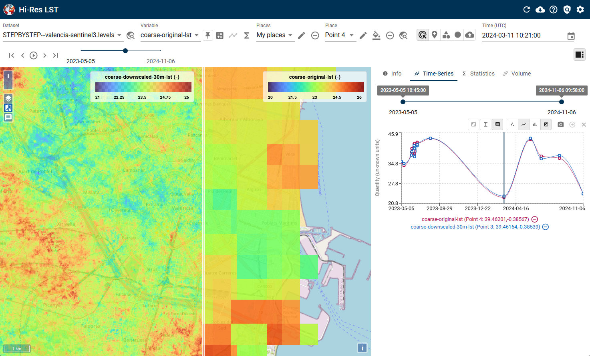

Earth Observation - Demo Projects

Tracking the most recent low tide line using Landsat and Sentinel-2 optical images synchronized with a tidal model.
Pipeline Monitoring from Space
Gas pipeline monitoring from Sentinel-2 to detect anomalous activities in the vicinity of a pipeline.
Oil Spill detection
Mapping oil spills in the ocean on Sentinel-2 imagery.
The service leverages Earth observation (EO) technologies and advanced Machine Learning (ML) techniques to provide high-resolution thermal monitoring data, supporting the platform's objectives of enhanced environmental modeling and data analysis.
